The skald
On a winter's evening, if your fire is lit and there's a seat beside it, you may hear a drum far off in the dusk, coming closer. A skald, a wandering drummer-poet in hide and fur with a headdress of bone and antler, ash paint across the eyes and bone beads in long braids, walks up out of the dark, takes the seat and stays a night or two. He tells the sagas of the old world, makes a poem of your deeds, and for a price sings you a blessing before a journey.
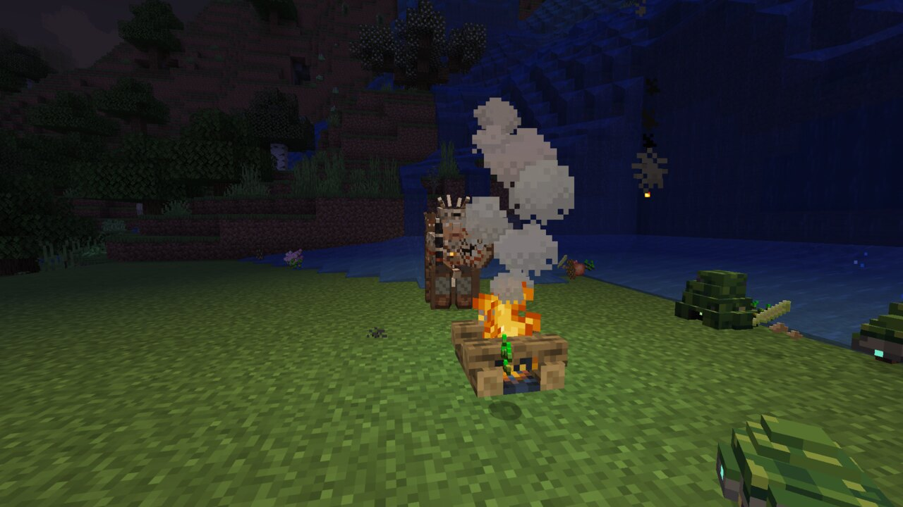
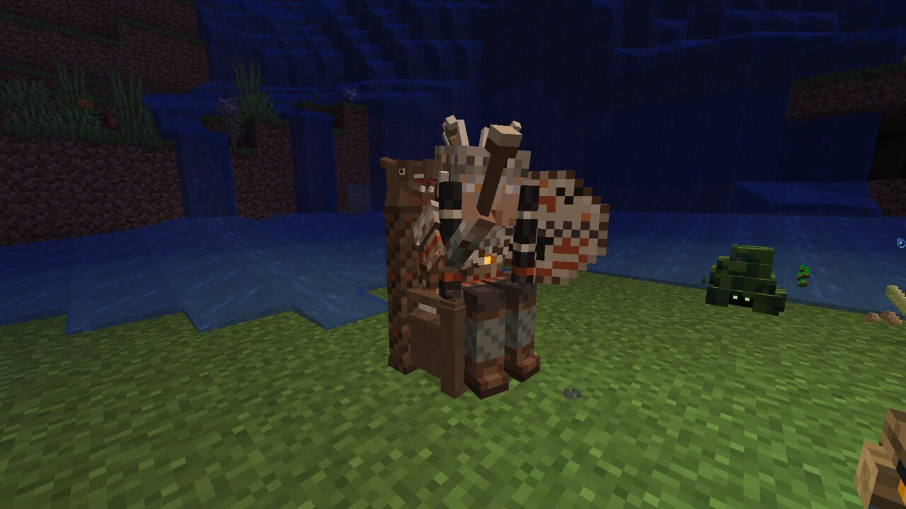
Bringing a skald to your fire
- A lit fire: a campfire (or soul campfire) or a long hearth.
- A seat within eight blocks of it: a high seat is what he likes best, but a bench, a stool or any seat will do. Without one you'll hear a drum somewhere off in the dusk, then nothing, and a hint.
- Be within about sixteen blocks of the fire at dusk (around 18:20 on a clock).
Some evenings one comes: one evening in two in winter, when sagas were told, and one in four the rest of the year. Only one skald walks the country at a time. He comes walking up from fourteen to twenty blocks off, goes to the seat and sits. He stays one or two nights and is gone at first light on his last day. If the fire goes out and stays out for a minute, he doesn't wait for it.
There are three of them, each with three names:
- Hallbjörn the Skald, Eyvindr Drum-Hand or Thorleif Grey-Braid: the old skald, dark braids gone grey
- Sigrún the Skáldkona, Ásta Bright-Voice or Gunnvör Raven-Drum: the skáldkona, red-blond braids
- Arni the Wanderer, Ketill Long-Road or Eirik Ash-Brow: the young wanderer, dark-haired, in lighter furs
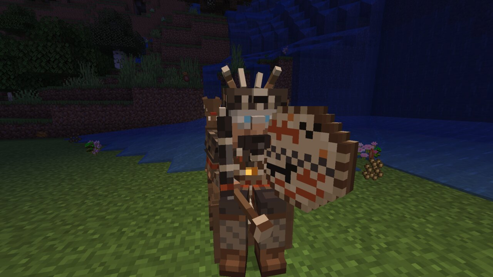
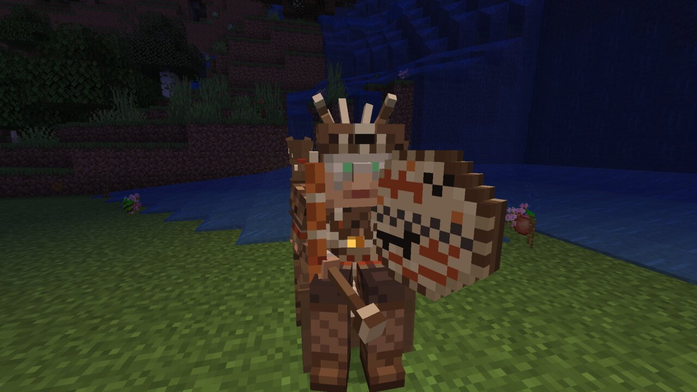
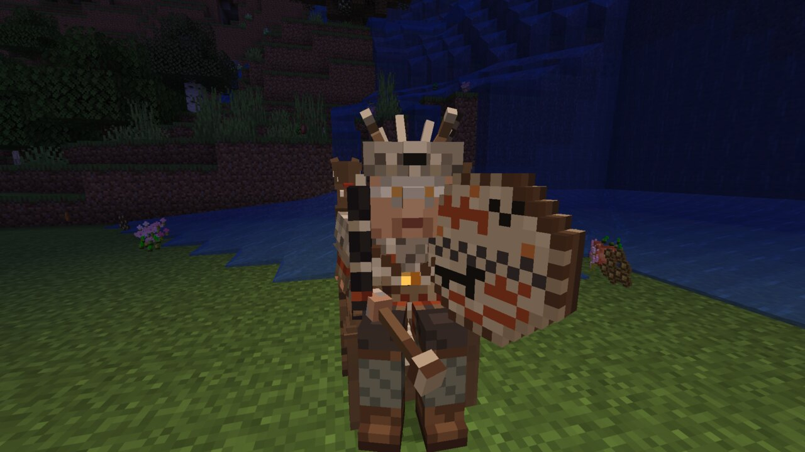
By day he sits playing his lyre. At night he takes up the drum now and then, a few bars of heartbeat to call folk to the fire.
Asking him
Use him to see what he'll do for you: a hide laid out by the fire, bone-laced, with six things on it. Click one to ask.
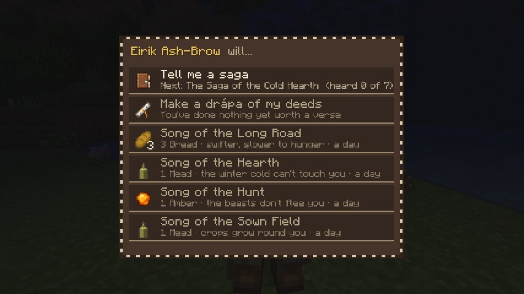
The sagas
Ask for a saga and he tells you the next one you haven't heard (once you've heard them all, any). Two bars on the drum, then the saga a line at a time, three or four seconds apart, in chat, a soft murmur under each line; then the chant, and a bow. Everyone within sixteen blocks hears it, and when it's done it's written into each listener's Saga Book Saga Book (you're given one the first time). The book keeps every saga you've heard, in order.
Four of the sagas tell of real places, and the last line points the way to the nearest one in your world: how many paces, and which way from the fire.
| Saga | Points the way to |
|---|---|
| The Saga of the Cold Hearth | the nearest Cold Hearth (an old sunken hall) |
| The Saga of the Rime-Seeress | the nearest Rime Isle (the frozen seeress's island) |
| The Saga of the Moss Grandmother | the nearest Moss Grandmother's glade |
| The Saga of the Bog Iron | the nearest swamp or mangrove swamp |
| The Saga of the Hunt in the Storm | — (a tale of the old world) |
| How the Moss Folk Came to the Cairns | — (a tale of the old world) |
| The Skald's Own Saga | — (a tale of the old world) |
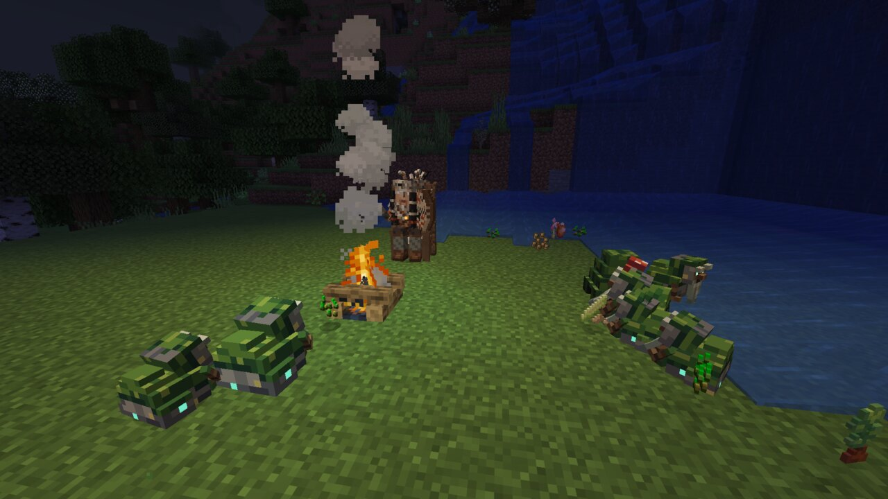
The sagas in full, if you'd rather read them than hear them:
Secret The Saga of the Cold Hearth
In the old days, before the cottages, the folk of the wood lived in long halls sunk under the turf.
Each hall had a hearth down its middle, and on it a fire that was never let go out, winter or summer.
The one who kept the fire was the Hearth-Keeper, and when a Keeper died, they burned on that same hearth.
So the Keeper stayed: in the smoke, in the warmth, watching over the fields and the beasts and the bees.
Then the halls emptied. Nobody remembers why. The fires went out one by one, and the turf grew over the doors.
But a cold hearth isn't an empty one. Bring it a gift of the hive, a gift of the home and a gift of the wild,
and strike a light on it at night, and the Keeper rises out of the smoke to see who remembers.
Feed it every season after, and the land round the hall will grow for you as it grew for them.
Then, at the fire: “There's such a hall some N paces which-way of this fire.”
Secret The Saga of the Rime-Seeress
Out in the frozen sea there's an island of stone, and on it a hall of staves, black with tar and white with rime.
A seeress came there in a hard winter: a völva in a blue cloak set with stones, a staff in her hand.
She saw something coming over the ice that the rest of us couldn't see, and she would not leave her watch.
So she asked the cold to keep her, and it did. It froze her into a pillar in the hall, mid-word, eyes open.
She's there still. The ice creeps out from the island every year, and the cold there eats at you.
But bring her warmth, and the gifts she asks for, and the ice cracks enough for her to speak.
She'll tell you what she saw. Some of it has happened. Some of it hasn't, yet.
And she'll bless you against the cold, so that for a while the winter can't touch you.
Then, at the fire: “The nearest such isle lies some N paces which-way of this fire.”
Secret The Saga of the Moss Grandmother
When the ice went north it left a stone behind in the wood, a great one, and the moss came to her first.
Moss on her shoulders, ferns in her lap, a birch grown up out of a crack in her back.
She slept a thousand years, and while she slept the moss folk came out of the moss she grew.
They're her children, every one: the little stony folk you see from the corner of your eye at dusk.
Look straight at one and it's only a mossy stone. Look away and it's gone about its business.
Build them a cairn out in the wild and leave them bread, and they'll keep the wild round it for you.
The Grandmother sleeps still, in a ring of old cairns in the oldest woods. Wake her gently.
She'll tell you things if you've been kind to her children. If you haven't, she'll know.
Then, at the fire: “Her glade lies some N paces which-way of this fire.”
Secret The Saga of the Bog Iron
Our grandmothers' grandmothers had no mines. They had the bog, and the bog gave them iron.
Dig in the peat where the swamp is wet and red, and you'll find lumps of it, rusty, heavy for their size.
Dry it by the fire. Then build a furnace of clay, taller than a man, and feed it charcoal till it roars.
Work the bellows, and work them, and keep on working them. The iron doesn't melt. It gathers, like a sponge.
Pull out the bloom white-hot and beat the slag out of it on the anvil, blow on blow, while it's still bright.
Then draw it out and shape it: an axe with a long beard, a seax, a pick, a hoe for the fields.
A smith who can do that is worth ten warriors to a hall. The tools outlast the hands that made them.
There's still iron in the bogs. Nobody has dug for it in a thousand years.
Then, at the fire: “The nearest bog I know of lies some N paces which-way of this fire.”
Secret The Saga of the Hunt in the Storm
On the worst nights of winter, when the wind screams, listen. Under the wind there are horns.
And hounds. And hooves on nothing, high over the treetops. That's the Hunt, riding.
Nobody knows who leads it. Some say a god, some say the dead, some a king who wouldn't stop hunting.
What it hunts is the little folk: the moss folk, the ones that live in cairns. They're its quarry.
So on storm nights the moss folk run. They run for the nearest fire, because the Hunt won't come near a fire.
If there's a cairn by your fire they'll huddle there till dawn, still as stones, and you'll never know.
Except that in the morning there'll be something on the capstone for you, and they'll remember.
Keep a fire lit on storm nights. You never know who's out there needing it.
Secret How the Moss Folk Came to the Cairns
Long ago the moss folk lived in the moss itself, under the roots, and slept the winters through.
Then people came into the woods with axes, and the roots came up, and the moss folk had nowhere to sleep.
A shepherd girl found one of them shivering in the snow, curled up like a stone, and she took pity on it.
She piled stones over it to keep the wind off: one, then another, and a flat one on top.
She left a crust of bread on the top stone. In the morning the bread was gone, and her ewes had all lambed twins.
That was the first cairn. Ever since, a cairn in the wild is a door for the moss folk, and bread is the knock.
And the shepherd girl? She lived to a hundred, and her fields were green even in the driest year.
Secret The Skald's Own Saga
You want to know where I got this drum. Everyone does. All right.
I had it from my teacher, and she from hers, back and back to the first skald, who made it.
He hunted an elk that led him three days into the north, and then it turned and spoke to him.
It said: you may have my hide for a drum, if you'll beat it for the ones who can't speak for themselves.
The trees. The stones. The beasts. The dead in the barrows, and the little folk in the cairns.
So that's what the drum is for. The sagas aren't mine. They're theirs. I only carry them.
When I'm gone someone else will carry the drum. Maybe someone who heard these stories at a fire.
Maybe you.
A drápa of your deeds
A drápa is a praise-poem. Ask for one and the skald makes it from what you've actually done (your advancements), the greatest first: up to four deeds, a verse each, with a refrain after the second, and a name to match the greatest. He chants it at the fire, then gives you the Drápa drápa written out, yours to keep. One drápa to a hero each time he passes your way; if you haven't done anything worth a verse yet, he says so.
The deeds he knows of, greatest first, the name each one earns you, and its verse:
| Name | If you've... | The verse |
|---|---|---|
| Wyrm-Bane | killed the Ender Dragon | “you went to the world's end and slew the wyrm that ruled there, and the sky went quiet after.” |
| Dread-Facer | summoned the Wither | “you called the three-headed dread up out of the black soul-sand, and stood before it.” |
| Hearth-Waker | relit a Cold Hearth | “you lit the cold hearth, and the Keeper rose out of the smoke to see who remembered.” |
| Ice-Hearer | heard the Rime-Seeress's prophecy | “you brought warmth to the frozen seeress, and the ice cracked, and she spoke.” |
| Stone-Waker | woke the Moss Grandmother | “you woke the Moss Grandmother in her glade, and she opened her eyes.” |
| Bog-Smith | made a bog iron tool | “you dug iron out of the bog and beat it bright on the anvil, and made a tool of it.” |
| Troll-Friend | befriended the bridge troll | “you made a friend of a troll under the mountain, which is harder than killing one.” |
| Moss-Kin | were given the moss cloak | “you wears a cloak of living moss. The little folk wove it, and they weave for few.” |
| Thorn-Reader | illuminated the whole grimoire | “you bound the thorn-book and read what was in it, and paid the price it asked.” |
| Market-Walker | found the Goblin Market | “you walked into the goblin market and walked out again, which few do.” |
| Gourd-Grower | grew a giant pumpkin for the fair | “you grew a gourd so great that the judges at the fair stood back from it.” |
| Fair-Winner | won the fair's championship | “you took the fair's highest honour, and the rosettes hang heavy on the wall.” |
| Elf-Friend | met the elves | “you met the elves in the wood, and the elves let them go.” |
| Deep-Walker | killed something near a sculk catalyst | “you went down into the deep dark where the silent thing listens, and came back up.” |
| Fire-Strider | entered the Nether | “you stepped through the burning gate into the land of fire.” |
| Bright-Stone | mined diamonds | “you cut the hard bright stones out of the deep rock.” |
| Bellows-Worker | drew a bloom from a bloomery | “you worked the bellows till the bloomery roared, and drew out the iron bloom.” |
| Storm-Keeper | sheltered the moss folk through a storm | “you kept a fire on a storm night, and the moss folk huddled safe by it till dawn.” |
| Beast-Friend | tamed an animal | “you took a wild beast and made a friend of it.” |
| Iron-Maker | smelted iron | “you smelted iron out of the rock, as the old smiths did.” |
| Night-Facer | killed a monster | “you stood against the things that come in the dark, and lived.” |
| Seed-Setter | planted a seed | “you put a seed in the earth and waited for it, which is its own kind of courage.” |
It goes: “Hear me, hall, and hush the hearth: I sing of you, your name.”, the verses, “Long shall the land remember you.”, and the skald's own name to end it.
Songs before a journey
For a price he'll sing you a blessing. Each lasts a whole day (two, if you drum along well) and shows among your effects. Nothing is free.
| Song | Price | What it does |
|---|---|---|
| Song of the Long Road | 3 bread | You go 15% faster and grow hungry more slowly. |
| Song of the Hearth | 1 mead | The winter cold can't touch you (as with a hot meal or the frost blessing). |
| Song of the Hunt | 1 amber | The beasts don't flee you: deer and chipmunks stay, boars don't charge (as with the antler crown). |
| Song of the Sown Field | 1 mead | Crops, berry bushes and saplings within eight blocks of you grow as if it were a long summer's day. |
Four bars of drum
He drums the heartbeat. This is when you can drum along.
Two bars of chant
Head thrown back, the drum held high, throat-sung.
The blessing
He rises with the drum, strikes it once over you, and the song settles on you. Then he sits again and bows.
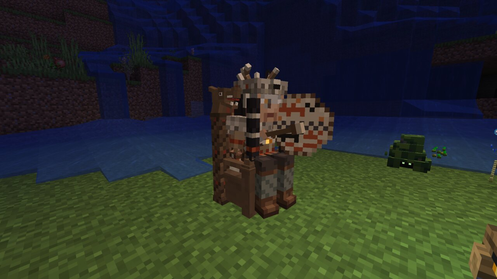
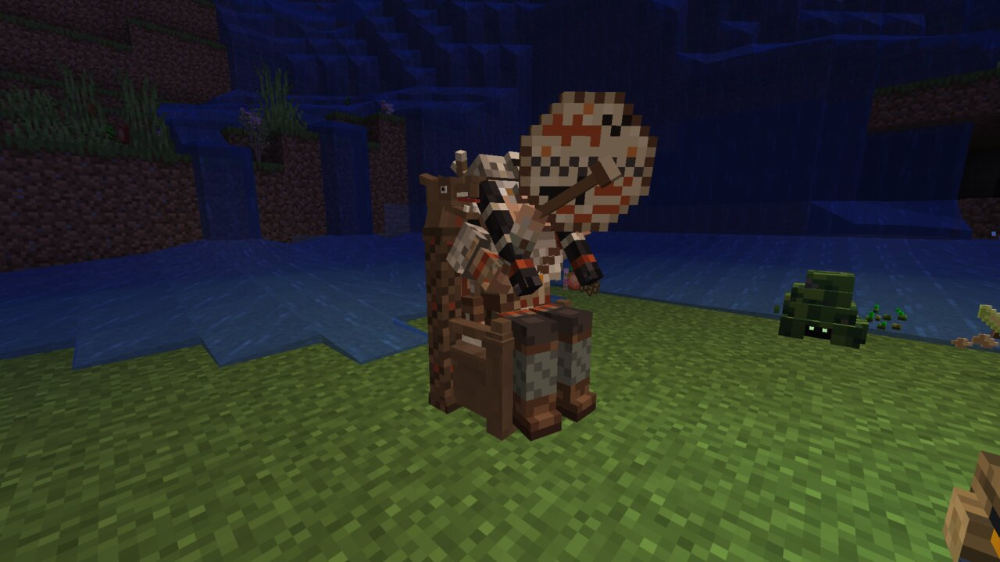
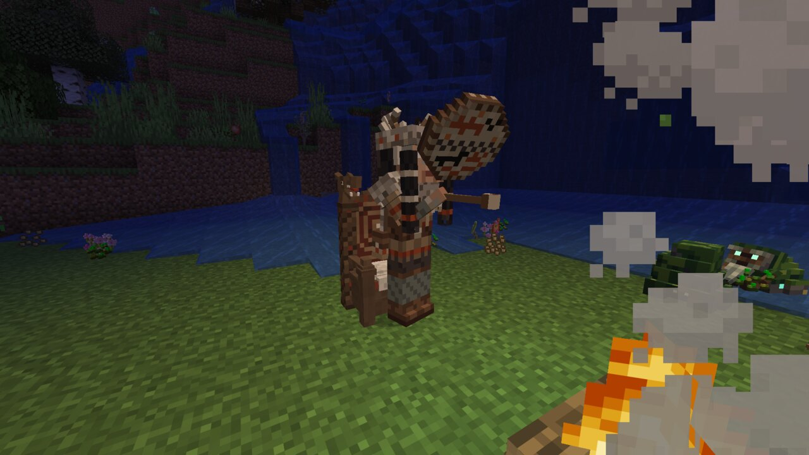
Drumming along
Bring your own Frame Drum frame drum. While he drums a song's four bars, use the drum in the air in time with him: his beat is a heartbeat, lub-dub, two strikes close together every bar of 1.2 seconds. A strike within about a tenth of a second of his counts, and a note rises over your head. Land four or more on the beat (and more on than off) and the blessing takes strongly: it lasts two days, and the Song of the Long Road speeds you more.
Don't wrong a skald
Strike him and he stands, points his beater at you and spits out a níðvísa, an insult-verse, for everyone at the fire to hear. Then he walks off into the dark. The verse goes round the country ahead of you, and for three days:
- the beasts shun you: deer flee even if you creep or bring food, and the antler crown, the moss cloak and the Song of the Hunt don't help;
- the pedlar, Mrs Prickleback, has heard it too and won't trade with you;
- any skald you meet won't do anything for you.
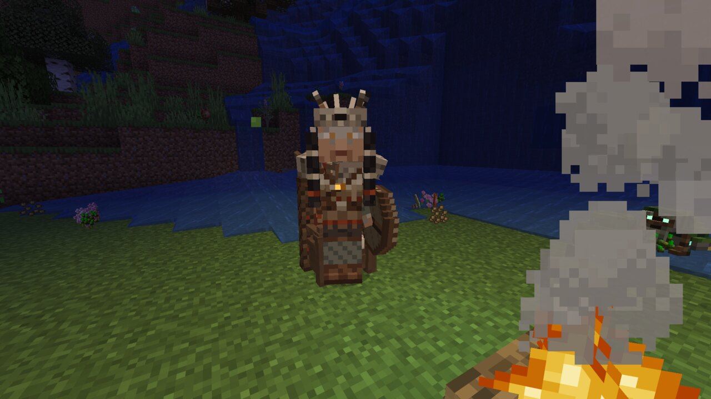
Advancements
In the Old Ways tab:
- A Drum in the Dusk: Meet a wandering skald at your fire
- Hush, and Listen: Hear a saga told at the fire
- The Whole Saga Book: Hear every saga the skalds tell
- Your Name in a Poem: Have a skald make a drápa of your deeds
- Sung on Your Way: Be blessed by a skald's song
- On the Beat: Drum along with a skald, in time, and make the blessing strong
Secret a hidden one
- Nithing: Earn a skald's insult-verse. Well done.
Close up
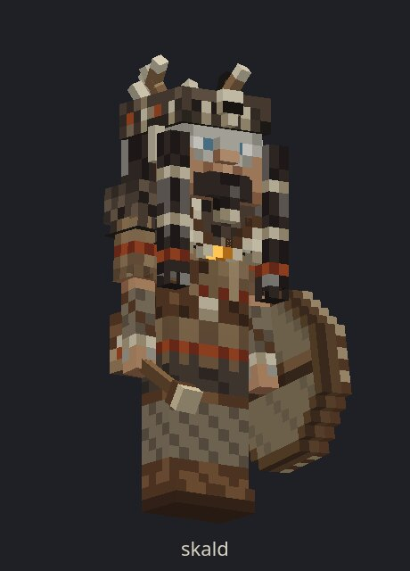
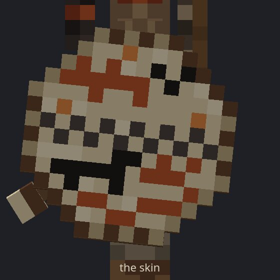
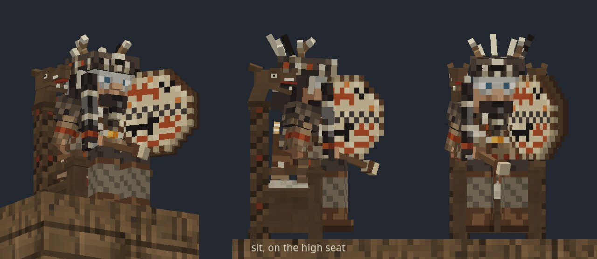